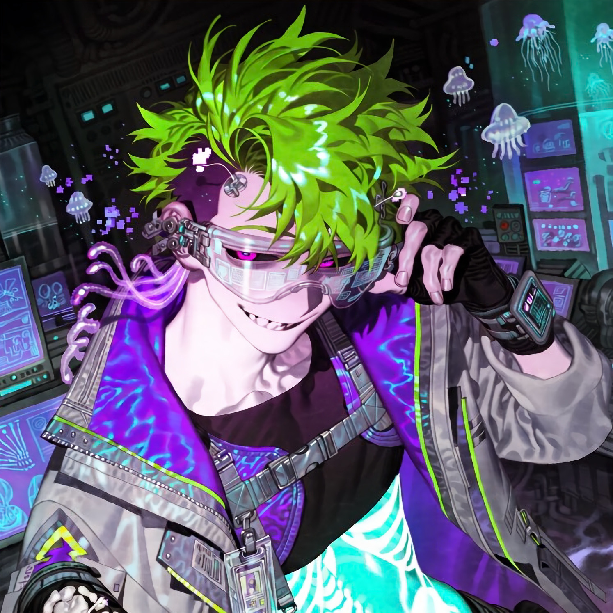

CHARACTER RECORD / 029STATUS: AVAILABLE

✦IMAGE
NOT FOUND
NOT FOUND
コンラート
✦ WITH OUTFIT
服装込み
PROMPT DATATXT / 029
boy, adult male, solo, masterpiece, best quality, ultra detailed,
1.4::lean athletic male, narrow waist, long limbs, slightly hunched posture, long slender fingers::,
1.5::messy neon green hair, dark purple underlayer, asymmetrical layered haircut, uneven bangs, shaved side, long strands sticking out, glossy hair::,
1.4::glowing magenta eyes, cyan ring-shaped irises, dark sclera, half-lidded eyes, mischievous grin, sharp canine teeth, subtle dark circles::,
1.5::translucent pale skin, visible skeletal structure beneath the skin, glowing rib cage, luminous spine visible through the torso, faintly visible collarbones, holographic bones, bioluminescent markings::,
1.4::translucent purple tendrils behind the ears, tiny floating pixel-like particles around the head::,
1.5::oversized futuristic laboratory jacket, black cropped inner shirt, asymmetrical utility harness, multiple transparent pockets, neon green piping, purple reflective panels, medical identification tags, silver buckles, fingerless gloves, black cargo trousers, strapped knee pads, chunky platform boots::,
1.4::oversized translucent protective goggles, thick angular frame, glowing cyan lenses, multiple small sensors attached to the goggles, holographic interface reflected on the lenses::,
1.3::skeletal hand motif accessories, miniature bone-shaped charms, glowing specimen vial attached to the belt, transparent medical tubing, digital wrist monitor::,
1.3::eccentric expression, curious gaze, playful but unsettling smile, unconventional scientist aesthetic::,